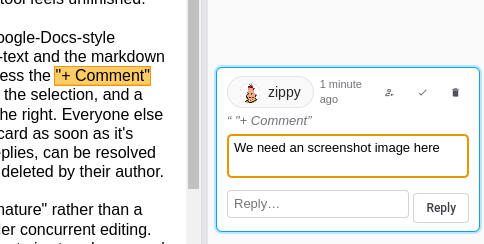
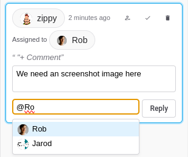
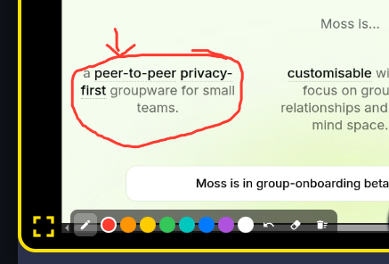

MVP vs Maturity
One of my favorite watch-phrases is: "as simple as possible but no simpler". Its more common cousin is the term "Minimum Viable Product," the MVP. These notions are actually hard. What really is "no simpler," and when is something actually "viable"? In today's world it seems like a certain level of maturity is necessary before a product is viable at all. People arrive with expectations set by the tools they already use, and a feature that would have counted as a luxury ten years ago now reads as a gap.
So this post is about a few details that, as we've worked with our Early Movers, turned out to be part of "maturity." Two are in tools, one is in Moss itself.
Notebooks: comments
Notebooks is our shared, real-time text editor. The minimum version of that is: several people type in the same note and everyone sees the result in real-time. That's worked for a while. But it turns out that in the real world, what we really need in a group context while working on the note is to talk about it, and the only way to do that was to type into the note itself. Nowadays everyone knows what commenting on a document looks like, and when that feature isn't there, the tool feels unfinished.

So, Notebooks now has Google-Docs-style comments, in both the rich-text and the markdown editor. Select some text, press the "+ Comment" button that appears beside the selection, and a card opens in a margin to the right. Everyone else sees the highlight and the card as soon as it's written. Comments have replies, can be resolved and reopened, and can be deleted by their author.
The part that makes this "mature" rather than a demo is what happens under concurrent editing. The range a comment refers to is stored as a mark on the note's underlying CRDT text, so when someone else edits above or inside the passage, the highlight moves with it. Two people can comment on overlapping ranges and both survive. If the commented text is deleted entirely, the comment stays in the margin as "original text was deleted," with its original quote, instead of silently vanishing.

Unfortunately, as soon as you meet that expectation, there comes with it the next round of expectations: coordinating
attention, i.e. who should be paying attention to this specific comment.
So, type @ in a comment and a list of the
group's members pops up. The person icon on a card assigns the comment to someone. The margin
filters show All, Assigned to me, or Mentions & mine. And being mentioned or assigned raises a
Moss notification that opens the note. None of this was in the original design
for comments. It was asked for as soon as people started using them.
Presence: annotation
Presence is our video-call tool. The minimum version is: see and hear each other, share a screen. Again, that worked. But a participant who is watching a share can't point at anything on it. The only way to say "this button" is to describe it in words, and anyone who has sat through that knows how long it takes.
So now any participant, the sharer included, can draw on a share tile. There's a freehand pen and a palette of eight colors. Everyone sees everyone's strokes at the same place on the shared content, regardless of how big the tile is on their screen. Strokes stay until their author removes them, the sharer clears the board, or the share stops. Someone who joins the call late sees the strokes that are already there.

We deliberately stopped there: no shapes, no text, no eraser, just undo, clear mine, and clear all. A stroke is sent once, when the pen lifts, over the same signaling path the call already uses, so drawing adds no video traffic. Each person owns their own strokes and rebroadcasts them with their regular presence heartbeat, which means a stroke lost to a dropped signal repairs itself within seconds and a late joiner gets the full board for free. That's the "as simple as possible" half. The "no simpler" half is that it works on both kinds of share, a screen and a shared Moss asset, and on any share type we add later.
Moss: timeouts and crash recovery
This one is less visible, which is exactly why it belongs here. A minimum viable Moss starts up when everything goes right. A mature Moss starts up when the last session went wrong.
Moss runs two helper processes alongside itself: the Holochain conductor and the
lair keystore that holds your keys. Nothing in the operating system ties those to
Moss. If Moss crashed, was force-quit, or was killed by a reboot that didn't wait for it, the
helpers kept running. The next time you launched Moss, the keystore was still held by the old
process, startup failed, and the message you got told you nothing about what to do.
It is the kind of failure that makes people give up on a tool.
Moss now records the processes it spawns, per profile. On launch it checks for leftovers from a previous session, stops the ones that are still the processes it started, and only then starts fresh. If the keystore is still busy anyway, it retries a few times with a growing pause rather than failing on the first try, because a short-lived lock from an antivirus scanner or an indexer clears itself within seconds. If it still can't start, the error page now says what happened and offers a button: "Stop leftover processes and retry."
And to stop the mess from being left in the first place, Moss now runs a tiny watchdog that notices when Moss has gone away, however it went, waits a short grace period for a normal shutdown, and then stops whichever helpers are still running.
The same spirit applies to tools that hang. When Moss asks a tool to do something and gets no answer in time, the timeout message now says which of two things probably happened: the tool's view never finished loading, or it loaded and then stalled in its own handler. That one line turns a mystery into a bug report.
What "viable" means
None of these three is a headline feature. Nobody chooses a platform because of its crash recovery. But each one marks the line between "I tried it" and "I use it."
The pattern across the first two is the one I want to draw out. Moss is groupware. A group space in Moss is an engagement space, not a file share. In that context, being able to share an artifact and work on it together turns out not to be enough. Once two people are looking at the same note or the same screen, the very next thing they need to do is talk about it, right there, pointing at the specific sentence or the specific button. Comments in Notebooks and strokes on a share in Presence are both that: affordances inside the tool that let a group jump from working on the artifact to talking about it, without leaving. For an engagement space, that jump is part of minimal viability. Leaving it out is the "simpler" that the watch-phrase warns against.
So the MVP question I've learned to ask isn't "what is the smallest thing that works?" It's "what is the smallest thing that a group can keep relying on, together?" That bar is higher than it used to be, and finding exactly where it sits for a group is what our Early Movers program is for.
For the adventurous: all of this is in Moss 0.16.0-rc.3, just out, with comments in Notebooks 0.8.0 and share annotations in Presence 0.17.1 from the tool library. It's a release candidate, so it's close, but still expect rough edges, and you will need to re-create your groups in the final release. Everyone you want to try it with needs the same Moss version.
For the technically curious
Feel free to skip this part.
-
Comment anchoring in Notebooks uses Automerge marks on the note's text, one per comment,
and the comment records live beside the text in the same Syn document. That is why comments
sync in real time and follow concurrent edits, and why there was no DNA change for them. Code
is under
ui/src/comments/in notebooks. - The markdown stays pure. Comments are never written into the text. The "copy as markdown" button inlines them as CriticMarkup, so a note can leave Notebooks with its discussion intact, and export and import carry comments, so they survive a move to a new network.
- Share annotations in Presence ride the existing signaling path as each author's own module state, the same way reactions do. Every heartbeat carries the author's board again, which is what repairs a lost signal and fills in a late joiner. The sharer owns only a clear epoch, so clearing the board is a single counter bump that every author's strokes are checked against.
- The watchdog in Moss is forked from the Moss binary itself and holds the read end of a pipe whose write end belongs to Moss. The kernel closes the pipe when Moss exits for any reason, so no polling is needed. Leftover lair and conductor processes are identified by pid plus start time, so a recycled pid is never mistaken for one of ours.